유통관리사-2급 (2020-11-01 기출문제)
1과목: 유통물류일반
1. 기업이 물류합리화를 추구하는 이유로 가장 옳지 않은 것은?
- 생산비 절감에는 한계가 있기 때문이다.
- 물류비는 물가상승에 따라 매년 증가하는 경향이 있기 때문이다.
- 물류차별화를 통해 기업이 경쟁우위를 확보할 수 있기 때문이다.
- 물류에 대한 고객의 요구들은 동일, 단순하여 고객에게 동일한 서비스를 제공할 수 있기 때문이다.
- 각종 기법과 IT에 의해 운송, 보관, 하역, 포장기술이 발전할 수 있기 때문이다.
(정답률: 81%)

2. 물류공동화의 효과로 가장 옳지 않은 것은?
- 수송물의 소량화
- 정보의 네트워크화
- 차량 유동성 향상
- 수·배송 효율 향상
- 다빈도 소량배송에 의한 고객서비스 확대
(정답률: 71%)
3. 한 품목의 연간수요가 12,480개이고, 주문비용이 5천원, 제품가격이 1,500원, 연간보유비용이 제품단가의 20%이다. 주문한 시점으로부터 주문이 도착하는 데에는 2주가 소요된다. 이때 ROP(재주문점)는? (1년을 52주, 1주 기준으로 재주문하는 것으로 가정)
- 240개
- 480개
- 456개
- 644개
- 748개
(정답률: 44%)
4. 화주기업과 3자물류업체와의 관계에 대한 설명으로 옳지 않은 것은?
- 물류업무에 관한 의식개혁 공유
- 전략적 제휴에 의한 물류업무 파트너십 구축
- 정보의 비공개를 통한 효율적인 물류업무개선 노력
- 주력부문에 특화한 물류차별화를 통해 경쟁우위 확보의지 공유
- 화주기업의 물류니즈에 기반한 물류업체의 서비스 범위 협의
(정답률: 83%)
5. 조직 내 갈등의 생성단계와 설명으로 가장 옳지 않은 것은?
- 잠재적 갈등: 갈등이 존재하지 않는 상태를 의미한다.
- 지각된 갈등: 상대방에 대해 적대감이나 긴장감을 지각하는 것을 말한다.
- 감정적 갈등: 상대방에 대해 적대감이나 긴장을 감정적으로 느끼는 상태를 말한다.
- 표출된 갈등: 갈등이 밖으로 드러난 상태를 의미한다.
- 갈등의 결과: 갈등이 해소되었거나 잠정적으로 억제되고 있는 상태를 말한다.
(정답률: 77%)
6. 물류와 관련된 고객서비스 항목들에 대한 설명 중 가장 옳지 않은 것은?
- 주문인도시간은 고객이 주문한 시점부터 상품이 고객에게 인도되는 시점까지 시간을 의미한다.
- 정시주문충족률을 높이면 재고유지비, 배송비가 감소하여 전체적인 물류비는 감소하게 된다.
- 최소주문량을 낮출수록 고객의 만족도는 높아지지만 다빈도 운송으로 인해 운송비용은 증가한다.
- 주문의 편의성을 높이기 위해서 주문처리시스템, 고객정보시스템의 구축이 필요하다.
- 판매 이후의 신속하고 효과적인 고객 응대는 사후서비스수준과 관련이 있다.
(정답률: 68%)
7. 공급사슬관리에 관련된 내용으로 옳지 않은 것은?
- Lean은 많은 생산량, 낮은 변동, 예측가능한 생산환경에서 잘 적용될 수 있다.
- Agility는 수요의 다양성이 높고 예측이 어려운 생산환경에서 잘 적용될 수 있다.
- 재고보충 리드타임이 짧아 지속적 보충을 하는 경우는 Kanban을 적용하기 힘들다.
- 수요예측이 힘들고 리드타임이 짧은 경우는 QR이 잘 적용될 수 있다.
- 적은 수의 페인트 기본색상 재고만을 보유하고 소비자들에게 색깔관점에서 커스터마이즈된 솔루션을 제공하는 것은 Lean/Agile 혼합전략의 예가 된다.
(정답률: 50%)
8. 아래 글상자에서 인적자원관리 과정에 따른 구성 내용으로 옳지 않은 것은?
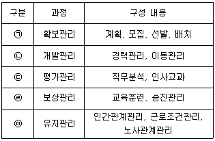
- ㉠
- ㉡
- ㉢
- ㉣
- ㉤
(정답률: 60%)
9. 재무통제(financial control)를 유효하게 행하기 위한 필요조건 설명으로 옳지 않은 것은?
- 책임의 소재가 명확할 것
- 시정조치를 유효하게 행할 것
- 업적의 측정이 정확하게 행해질 것
- 업적평가에는 적절한 기준을 선택할 것
- 계획목표를 CEO의 의사결정에만 전적으로 따를 것
(정답률: 81%)
10. 기업의 경쟁전략 중 조직규모의 유지 및 축소 전략으로옳지 않은 것은?
- 다운사이징
- 집중화전략
- 리스트럭처링
- 영업양도전략
- 현상유지전략
(정답률: 46%)
11. 아래 글상자에서 설명하는 시스템으로 가장 옳은 것은?
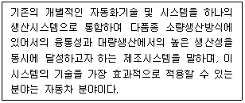
- 전사적품질관리시스템
- 전사적품질경영시스템
- 적시생산시스템
- 유연제조시스템
- 공급체인관리시스템
(정답률: 43%)
12. 맥킨지 사업포트폴리오 분석은 산업 매력도와 사업 경쟁력차원으로 구분할 수 있는데 이 경우 사업 경쟁력 평가요소에 포함되지 않는 것은?
- 시장점유율, 관리능력, 기술수준
- 제품품질, 상표이미지, 생산능력
- 시장점유율, 상표이미지, 원가구조
- 산업성장률, 기술적변화정도, 시장규모
- 유통망, 원자재 공급원의 확보
(정답률: 47%)
13. 유통경로 성과를 측정하는 변수 중 정량적 측정변수로 가장 옳지 않은 것은?
- 새로운 세분 시장의 수, 악성부채 비율
- 상품별, 시장별 고객 재구매 비율
- 브랜드의 경쟁력, 신기술의 독특성
- 손상된 상품비율, 판매예측의 정확성
- 고객불평건수, 재고부족 방지비용
(정답률: 71%)
14. 아래 글상자 내용은 유통경로의 필요성에 관한 것이다. ㉠~㉤에 들어갈 용어를 순서대로 옳게 나열한 것은?
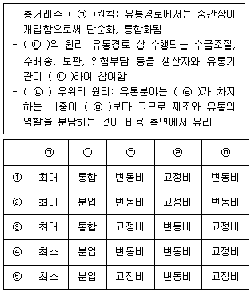
- ①
- ②
- ③
- ④
- ⑤
(정답률: 68%)
15. 유통경영전략을 수립하기 위한 환경분석 중 내부환경요인 분석에서 활용되는 가치사슬모형(value chain model)에 대한 설명으로 옳은 것은?
- 기업활동을 여러 세부활동으로 나누어 활동목표 수준과 실제 성과를 분석하면서 외부 프로세스의 문제점과 개선 방안을 찾아내는 기법이다.
- 기업의 가치는 보조활동과 지원활동의 가치창출 활동에 의해 결정된다.
- 핵심프로세스에는 물류투입, 운영·생산, 물류산출, 마케팅 및 영업, 인적자원관리 등이 포함된다.
- 지원프로세스에는 기업인프라, 기술개발, 구매조달, 서비스 등이 포함된다.
- 기업 내부 단위활동과 활동들 간 연결고리 문제점 및 개선방안을 체계적으로 찾는데 유용한 기법이다.
(정답률: 46%)
16. 유통경로 구조를 결정하는데 여러 가지 고려해야할 요인들을 반영하여 중간상을 결정하는 방법인 체크리스트법에 대한 연결 요인 중 가장 옳은 것은?
- 시장요인 - 제품표준화
- 제품요인 - 기술적 복잡성
- 기업요인 - 시장규모
- 경로구성원요인 - 재무적 능력
- 환경요인 - 통제에 대한 욕망
(정답률: 44%)
17. 아래 글상자에서 설명하는 한정기능도매상으로 옳은 것은?
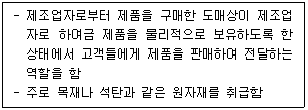
- 현금판매-무배달 도매상(cash and carry wholesaler)
- 트럭도매상(truck wholesaler)
- 직송도매상(drop shipper)
- 선반도매상(rack jobber)
- 우편주문도매상(mail order wholesaler)
(정답률: 70%)
18. 아래 글상자에서 소매상의 분류 기준과 해당 내용으로 옳은 것은?
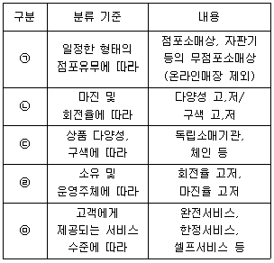
- ㉠
- ㉡
- ㉢
- ㉣
- ㉤
(정답률: 58%)
19. 조직 내 갈등수준과 집단성과수준에 관한 그래프이다. 해석한 것으로 옳은 것은?
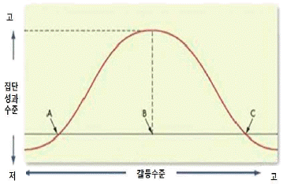
- 조직에서 갈등수준과 성과는 항상 정비례 관계이다.
- A에서 갈등은 순기능을 나타내고 있다.
- C에서 갈등은 순기능을 나타내고 있으며 조직의 내부 수준은 혁신적이며 생동적이다.
- 갈등은 조직 구성원이나 부서 간의 경쟁을 통하여 구성원들이 서로 경쟁하는 결과만 야기하므로 동기부여에 기여하기 어렵다.
- 경영자는 적당한 갈등수준을 유지하며 갈등의 순기능을 최대화하도록 노력할 필요가 있다.
(정답률: 73%)
20. 아래 글상자의 ㉠~㉡에 들어갈 용어를 순서대로 나열한 것으로 옳은 것은?
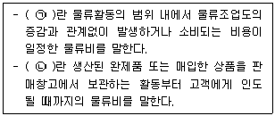
- ㉠ 자가물류비, ㉡ 위탁물류비
- ㉠ 위탁물류비, ㉡ 자가물류비
- ㉠ 물류고정비, ㉡ 판매물류비
- ㉠ 물류변동비, ㉡ 사내물류비
- ㉠ 사내물류비, ㉡ 판매물류비
(정답률: 78%)
21. 수배송물류의 기능으로 옳지 않은 것은?
- 분업화를 촉진시킨다.
- 재화와 용역의 교환기능을 촉진시킨다.
- 대량생산과 대량소비를 가능하게 하여 규모의 경제를 실현시킨다.
- 문명발달의 전제조건이 되기는 하나 지역간 국가간 유대를 강화시키지는 못한다.
- 재화의 생산, 분배 및 소비를 원활하게 하여 재화와 용역의 가격을 안정시켜 주는 기능을 한다.
(정답률: 71%)
22. 기업이 직면하게 되는 경쟁환경의 유형에 대한 설명 중 가장 옳지 않은 것은?
- 할인점과 할인점 간의 경쟁은 수평적 경쟁이다.
- 할인점과 편의점 간의 경쟁은 업태간 경쟁이다.
- 제조업자와 도매상 간의 경쟁은 수직적 경쟁이다.
- [제조업자-도매상-소매상]과 [제조업자-도매상-소매상]의 경쟁은 수직적마케팅시스템경쟁이다.
- 백화점과 백화점 간의 경쟁은 협력업자 경쟁이다.
(정답률: 72%)
23. 아래 글상자 A씨의 인터뷰 사례에 관계된 이론에 대해 기술한 것으로 옳지 않은 것은?
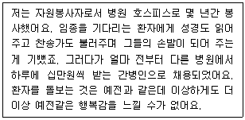
- 인간이 행동원인을 규명하려는 심리적 속성인 자기귀인(self-attribution)에 근거한 인지평가이론이다.
- 외적동기화가 된 사람들은 과제수행을 보상의 획득이나 처벌회피와 같이 일정한 목적을 달성하기 위한 수단으로 여긴다.
- 외적인 보상에 의해 동기 유발되어 있는 경우에 급여지급 같은 내적동기를 도입하게 되면 오히려 동기유발정도가 감소한다는 내용이다.
- 재미, 즐거움, 성취감 등 때문에 어떤 행동을 하는 것은 내재적 동기에 근거한 것이다.
- 보상획득, 처벌, 회피 등 때문에 어떤 행동을 하는 것은 외재적 동기에 근거한 것이다.
(정답률: 64%)
24. 기업의 가치를 하락시키지 않도록 하기 위해 새로운 투자로부터 벌어들여야 하는 최소한의 수익률을 의미하는 용어로 가장 옳은 것은?
- 투자수익률
- 재무비율
- 자본비용
- 증권수익률
- 포트폴리오
(정답률: 30%)
25. 물류의 원가를 배분하는 기준에 대한 설명으로 옳지 않은 것은?
- 많은 수익을 올리는 부문에 더 많은 원가를 배분한다.
- 공평성을 기준으로 배분한다.
- 원가대상 산출물의 수혜 기준으로 배분한다.
- 자원 사용의 원인이 되는 변수를 찾아 인과관계를 기준으로 배분한다.
- 대상의 효율성을 기준으로 배분한다.
(정답률: 23%)
2과목: 상권분석
26. 소매점의 입지 대안을 확인하고 평가할 때 의사결정의 기본이 되는 몇 가지 원칙들이 있다. 아래 글상자의 설명과 관련된 원칙으로 옳은 것은?
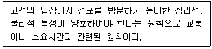
- 가용성의 원칙(principle of availability)
- 보충가능성의 원칙(principle of compatibility)
- 고객차단의 원칙(principle of interception)
- 동반유인원칙(principle of cumulative attraction)
- 접근가능성의 원칙(principle of accessibility)
(정답률: 72%)
27. 아래 글상자는 입지의 유형을 점포를 이용하는 소비자의 이용목적에 따라 구분하거나 공간균배에 의해 구분할 때의 입지특성들이다. 아래 글상자의 ㉠, ㉡, ㉢에 들어갈 용어를 순서대로 나열한 것으로 옳은 것은?
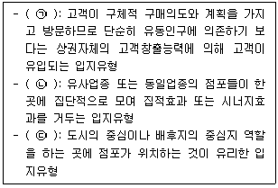
- ㉠ 생활형입지, ㉡ 집심성입지, ㉢ 집재성입지
- ㉠ 적응형입지, ㉡ 산재성입지, ㉢ 집재성입지
- ㉠ 집심성입지, ㉡ 생활형입지, ㉢ 목적형입지
- ㉠ 목적형입지, ㉡ 집재성입지, ㉢ 집심성입지
- ㉠ 목적형입지, ㉡ 집재성입지, ㉢ 국지적집중성입지
(정답률: 67%)
28. 아래 글상자는 Huff모델을 활용하여 어느 지역 신규슈퍼마켓의 예상매출액을 추정하는 과정을 설명하고 있다. ㉠, ㉡, ㉢에 들어갈 용어로 가장 옳은 것은?
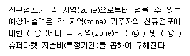
- ㉠ 방문빈도 ㉡ 가구수 ㉢ 일인당
- ㉠ 방문빈도 ㉡ 가구수 ㉢ 가구당
- ㉠ 쇼핑확률 ㉡ 가구수 ㉢ 일인당
- ㉠ 쇼핑확률 ㉡ 인구수 ㉢ 가구당
- ㉠ 쇼핑확률 ㉡ 인구수 ㉢ 일인당
(정답률: 45%)
29. 아래의 상권분석 및 입지분석의 절차를 진행 순서대로 배열한 것으로 옳은 것은?
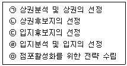
- ㉠-㉡-㉣-㉢-㉤
- ㉠-㉡-㉢-㉣-㉤
- ㉤-㉠-㉡-㉢-㉣
- ㉡-㉠-㉢-㉣-㉤
- ㉤-㉡-㉢-㉠-㉣
(정답률: 50%)
30. 상권분석기법 중 유추법(analog method)에 대한 설명으로 가장 옳지 않은 것은?
- 신규점포의 판매예측에 활용되는 기술적 방법이다.
- 유사점포의 판매실적을 활용하여 신규점포의 판매를 예측한다.
- 기존점포의 판매예측에도 활용할 수 있다.
- 유사점포는 신규점포와 동일한 상권안에서 영업하고 있는 점포 중에서만 선택해야 한다.
- CST(customer spotting technique)지도를 활용하여 신규점포의 상권규모를 예측한다.
(정답률: 59%)
31. 소매입지를 선택할 때는 상권의 소매포화지수(RSI)와 시장확장잠재력(MEP)을 함께 고려하기도 한다. 다음 중 가장 매력적이지 않은 소매상권의 특성으로 옳은 것은?
- 높은 소매포화지수(RSI)와 높은 시장확장잠재력(MEP)
- 낮은 소매포화지수(RSI)와 낮은 시장확장잠재력(MEP)
- 높은 소매포화지수(RSI)와 낮은 시장확장잠재력(MEP)
- 낮은 소매포화지수(RSI)와 높은 시장확장잠재력(MEP)
- 중간 소매포화지수(RSI)와 중간 시장확장잠재력(MEP)
(정답률: 55%)
32. 특정 지역에 다수의 점포를 동시에 출점시켜 매장관리 등의 효율을 높이고 시장점유율을 확대하는 전략으로 가장 옳은 것은?
- 다각화 전략
- 브랜드 전략
- 프랜차이즈전략
- 도미넌트출점전략
- 프로모션전략
(정답률: 57%)
33. 점포 신축을 위한 부지매입 또는 점포 확장을 위한 증축 등의 상황에서 반영해야 할 공간적 규제와 관련된 내용들 중 틀린 것은?
- 건폐율은 대지면적에 대한 건축연면적의 비율을 말한다.
- 대지에 건축물이 둘 이상 있는 경우에는 이들 건축면적의 합계로 건폐율을 계산한다.
- 대지내 건축물의 바닥면적을 모두 합친 면적을 건축연면적이라 한다.
- 용적률 산정에서 지하층·부속용도에 한하는 지상 주차용면적은 제외된다.
- 건폐율은 각 건축물의 대지에 여유 공지를 확보하여 도시의 평면적인 과밀화를 억제하려는 것이다.
(정답률: 36%)
34. 정보기술의 발달과 각종 데이터의 이용가능성이 확대되면서 지도작성체계와 데이터베이스관리체계의 결합체인 지리정보시스템(GIS)을 상권분석에 적극 활용할 수 있는 환경이 조성되고 있다. 아래 글상자의 괄호안에 적합한 GIS 관련용어로 가장 옳은 것은?
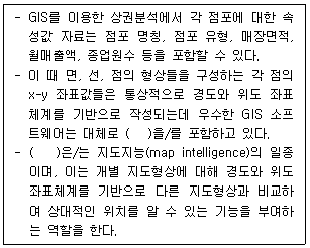
- 버퍼(buffer)
- 레이어(layer)
- 중첩(overlay)
- 기재단위(entry)
- 위상(topology)
(정답률: 42%)
35. 아래 글상자의 내용 가운데 상권 내 경쟁관계를 분석할 때 포함해야 할 내용만을 모두 고른 것으로 옳은 것은?
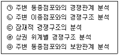
- ㉠
- ㉠, ㉡
- ㉠, ㉡, ㉢
- ㉠, ㉡, ㉢, ㉣
- ㉠, ㉡, ㉢, ㉣, ㉤
(정답률: 60%)
36. 넬슨(Nelson)은 소매점포가 최대 이익을 확보할 수 있는 입지의 선정과 관련하여 8가지 소매입지 선정원칙을 제시했다. 다음 중 그 연결이 옳지 않은 것은?
- 경합의 최소성 - 해당 점포와 경쟁관계에 있는 점포의 수가 가장 적은 장소를 선택하는 것이 유리함
- 상권의 잠재력 - 판매하려는 상품이 차지할 시장점유율을 예측하고 점포개설 비용을 파악하여 분석한 종합적 수익성이 높은 곳이 유리함
- 양립성 - 업종이 같은 점포가 인접해서 상호보완관계를 통해 매출을 향상시킬 수 있음
- 고객의 중간유인 가능성 - 고객이 상업지역에 들어가는 동선의 중간에 위치하여 고객을 중간에서 차단할 수 있는 입지가 유리함
- 집적 흡인력 - 집재성 점포의 경우 유사한 업종이 서로한 곳에 입지하여 고객흡인력을 공유하는 것이 유리함
(정답률: 41%)
37. 공동주택인 아파트 단지내 상가의 일반적 상권특성과 거리가 먼 것은?
- 상가의 수요층이 단지내 입주민들로 제한되어 매출성장에 한계가 있는 경우가 많다.
- 관련법규에서는 단지내 상가를 근린생활시설로 분류하여 관련내용을 규정하고 있다.
- 상가의 연면적과 단지의 세대수를 비교한 세대당 상가면적을 고려해야 한다.
- 일반적으로 중소형 평형 보다는 높은 대형평형 위주로 구성된 단지가 유리하다.
- 기존 상가에서 업종을 제한하여 신규점포의 업종선택이 자유롭지 못한 경우가 있다.
(정답률: 57%)
38. 점포가 위치하게 될 건축용지를 나눌 때 한 단위가 되는 땅의 형상이나 가로(街路)와의 관계를 설명한 내용 중 옳은 것은?
- 각지 - 3개 이상의 가로각(街路角)에 해당하는 부분에 접하는 토지로 3면각지, 4면각지 등으로 설명함
- 획지 - 여러 가로에 접해 일조와 통풍이 양호하며 출입이 편리하고 광고홍보효과가 높음
- 순획지 - 획지에서도 계통이 서로 다른 도로에 면한 것이 아니라 같은 계통의 도로에 면한 각지
- 삼면가로각지 - 획지의 삼면에 계통이 다른 가로에 접하여 있는 토지
- 각지 - 건축용으로 구획정리를 할 때 단위가 되는 땅으로 인위적, 행정적 조건에 의해 다른 토지와 구별되는 토지
(정답률: 36%)
39. 임차한 건물에 점포를 개점하거나 폐점할 때는 임차권의 확보가 매우 중요하다. “상가건물 임대차보호법”(법률 제17490호, 2020. 9. 29., 일부개정)과 관련된 내용으로 옳지 않은 것은?
- “상법”(법률 제17362호, 2020. 6. 9., 일부개정)의 특별법이다.
- 기간을 정하지 않은 임대차는 그 기간을 1년으로 본다.
- 임차인이 신규임차인으로부터 권리금을 회수할 수 있는 권한을 일부 인정한다.
- 법 규정에 위반한 약정으로 임차인에게 불리한 것은 그 효력이 없는 강행규정이다.
- 상가건물 외에 임대차 목적물의 주된 부분을 영업용으로 사용하는 경우에도 적용된다.
(정답률: 27%)
40. 소매점포의 입지분석에 활용하는 회귀분석에 관한 설명으로 가장 옳지 않은 것은?
- 소매점포의 성과에 영향을 미치는 다양한 요소들의 상대적 중요도를 파악할 수 있다.
- 분석에 포함되는 여러 독립변수들끼리는 서로 관련성이 높을수록 좋다.
- 점포성과에 영향을 미치는 영향변수에는 상권내 경쟁수준이 포함될 수 있다.
- 점포성과에 영향을 미치는 영향변수에는 점포의 입지특성이 포함될 수 있다.
- 표본이 되는 점포의 수가 충분하지 않으면 회귀분석결과의 신뢰성이 낮아질 수 있다.
(정답률: 63%)
41. 소매점포의 입지조건을 평가할 때 점포의 건물구조 등 물리적 요인과 관련한 일반적 설명으로 옳지 않은 것은?
- 점포 출입구에 단차를 만들어 사람과 물품의 출입을 용이하게 하는 것이 좋다.
- 건축선후퇴는 타 점포에 비하여 눈에 띄기 어렵게 하므로 가시성에 부정적 영향을 미친다.
- 점포의 형태가 직사각형에 가까우면 집기나 진열선반 등을 효율적으로 배치하기 쉽고 데드스페이스가 발생하지 않는다.
- 건물너비와 깊이에서 점포의 정면너비가 깊이보다 넓은 형태(장방형)가 가시성 확보 등에 유리하다.
- 점포건물은 시장규모에 따라 적정한 크기가 있다. 일정규모수준을 넘게 되면 규모의 증가에도 불구하고 매출은 증가하지 않을 수 있다.
(정답률: 61%)
42. 입지의 분석에 사용되는 주요 기준에 대한 설명으로 가장 옳지 않은 것은?
- 신뢰성 - 입지분석의 결과를 믿을 수 있는 정도를 의미한다.
- 접근성 - 고객이 점포에 쉽게 접근할 수 있는 정도를 의미한다.
- 인지성 - 고객에게 점포의 위치를 쉽게 설명할 수 있는 정도를 의미한다.
- 가시성 - 점포를 쉽게 발견할 수 있는 정도를 의미한다.
- 호환성 - 해당점포가 다른 업종으로 쉽게 전환할 수 있는 정도를 의미한다.
(정답률: 34%)
43. 일반적인 권리금에 대한 설명으로 가장 옳지 않은 것은?
- 시설권리금은 실내 인테리어 및 장비 및 기물에 대한 권리금액을 말한다.
- 단골고객을 확보하여 상권의 형성 과정에 지대한 공헌을 한 대가는 영업권리금에 해당된다.
- 시설권리금의 경우 시설에 대한 감가상각은 통상적으로 3년을 기준으로 한다.
- 영업권리금의 경우 평균적인 순수익을 고려하여 계산하기도 한다.
- 영업권리금의 경우 지역 또는 자리권리금이라고도 한다.
(정답률: 33%)
44. 서로 떨어져 있는 두 도시 A, B의 거리는 30km이다. 이 때 A시의 인구는 8만명이고 B시의 인구는 A시 인구의 4배라고 하면 도시간의 상권경계는 B시로부터 얼마나 떨어진 곳에 형성되겠는가? (Converse의 상권분기점 분석법을 이용해 계산하라.)
- 6km
- 10km
- 12km
- 20km
- 24km
(정답률: 38%)
45. 특정 지점의 소비자가 어떤 점포를 이용할 확률을 추정할 때 활용하는 수정Huff모델에 관한 설명 중 옳지 않은 것은?
- 점포면적과 점포까지의 이동거리 등 두 변수만으로 소비자들의 점포 선택확률을 추정한다.
- 실무적 편의를 위해 점포면적과 이동거리에 대한 민감도를 따로 추정하지 않는다.
- 점포면적과 이동거리에 대한 소비자의 민감도는 '1'과 '-2'로 고정하여 추정한다.
- 점포면적과 이동거리 두 변수 이외의 다른 변수들을 반영할 수 없다는 점에서 Huff모델과 다르다.
- Huff모델 보다 정확도가 낮을 수 있지만 일반화하여 쉽게 적용하고 대략적 계산이 가능하게 한 것이다.
(정답률: 29%)
3과목: 유통마케팅
46. 아래 글상자에서 설명하고 있는 유통마케팅조사의 표본추출 유형으로 옳은 것은?
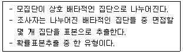
- 단순 무작위표본
- 층화 확률표본
- 판단표본
- 군집표본
- 할당표본
(정답률: 41%)
47. 고객관리에 대한 설명으로 옳지 않은 것은?
- 일반적으로 새로운 고객을 획득하는 것 보다 기존고객을 유지하는데 드는 비용이 더 높다.
- 고객과 지속적으로 좋은 관계를 유지하는 것은 기업경영의 중요 성공요소 중 하나이다.
- 경쟁자보다 더 큰 가치를 제공하여야 고객 획득률을 향상시킬 수 있다.
- 효과적인 애호도 증진 프로그램 등을 통해 고객 유지율을 향상시킬 수 있다.
- 제품과 서비스에 대한 고객 만족도를 높임으로써 고객유지율을 향상 시킬 수 있다.
(정답률: 64%)
48. 고객에 대한 원활한 판매서비스를 위해 판매원이 보유해야 할 필수적 정보들로 옳지 않은 것은?
- 기업에 대한 정보
- 제품에 대한 정보
- 판매조직 구조에 대한 정보
- 고객에 대한 정보
- 시장과 판매기회에 대한 정보
(정답률: 64%)
49. 가격에 관한 설명으로 가장 옳지 않은 것은?
- 마케팅 관점에서 가격은 특정제품이나 서비스의 소유 또는 사용을 위한 대가로 교환되는 돈이나 기타 보상을 의미한다.
- 대부분의 제품이나 서비스는 돈으로 교환되고, 지불가격은 항상 정가나 견적가치와 일치한다.
- 기업관점에서 가격은 총수익을 변화시키므로 가격결정은 경영자가 직면한 중요하고 어려운 결정 중의 하나이다.
- 소비자관점에서 가격은 품질, 내구성 등의 지각된 혜택과 비교되어 순가치를 평가하는 기준으로 사용된다.
- 가격결정 방법에는 크게 수요지향적 접근방법, 원가지향적 접근방법, 경쟁지향적 접근방법 등이 있다.
(정답률: 63%)
50. 가격탄력성은 가격 변화에 따른 수요 변화의 탄력적인 정도를 나타낸다. 가격탄력성에 대한 설명으로 가장 옳지 않은 것은?
- 고려할 수 있는 대안의 수가 많을수록 가격탄력성이 높다.
- 대체재의 이용이 쉬울수록 가격탄력성이 높다.
- 더 많은 보완적인 재화, 서비스가 존재할수록 가격탄력성이 높다.
- 가격변화에 적응하는데 시간이 적게드는 재화가 가격탄력성이 높다.
- 필수재보다 사치품의 성격을 갖는 경우가 가격탄력성이 높다.
(정답률: 22%)
51. 상품관리의 기본적 개념에 대한 설명으로 옳지 않은 것은?
- 거의 모든 상품들은 유형적인 요소와 무형적인 요소를 함께 가지고 있으며, 흔히 유형적인 상품을 제품이라 부르고 무형적 상품을 서비스라고 한다.
- 대부분의 상품들은 단 한가지의 편익만 제공하는 것이 아니라 여러가지 편익을 동시에 제공하기 때문에 상품을 편익의 묶음이라고 볼 수 있다.
- 고객 개개인이 느끼는 편익의 크기는 유형적 상품에 집중되어 객관적으로 결정된다.
- 일반적으로 회사는 단 하나의 상품을 내놓기보다는 여러 유형의 상품들로 상품라인을 구성하는 것이 고객확보에 유리하다.
- 상품라인 내 어떤 상품을, 언제, 어떤 상황 하에서 개발할 것인지 계획하고, 실행하고, 통제하는 것이 상품관리의 핵심이다.
(정답률: 67%)
52. 소매업체의 상품구색에 관한 설명으로 가장 옳지 않은 것은?
- 다양성은 상품구색의 넓이를 의미한다.
- 다양성은 취급하는 상품 카테고리의 숫자가 많을수록 커진다.
- 전문성은 상품구색의 깊이를 의미한다.
- 전문성은 각 상품 카테고리에 포함된 품목의 숫자가 많을수록 커진다.
- 상품가용성은 다양성에 반비례하고 전문성에 비례한다.
(정답률: 53%)
53. 아래 글상자의 서비스 마케팅 사례의 원인이 되는 서비스 특징으로 가장 옳은 것은?
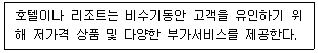
- 서비스 무형성
- 서비스 이질성
- 서비스 비분리성
- 서비스 소멸성
- 서비스 유연성
(정답률: 37%)
54. 아래 글상자에서 설명하고 있는 소매상의 변천과정과 경쟁을 설명하는 가설이나 이론으로 옳은 것은?
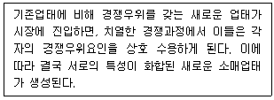
- 소매수명주기 이론
- 소매수레바퀴 이론
- 소매아코디언 이론
- 자연도태 이론
- 변증법적 이론
(정답률: 56%)
55. 상시저가전략(EDLP: everyday low price)과 비교했을 때 고저가격전략(high-low pricing)이 가진 장점으로 옳지 않은 것은?
- 고객의 지각가치를 높이는 효과가 있다.
- 일부 품목을 저가 미끼 상품으로 활용할 수 있어 고객을 매장으로 유인할 수 있다.
- 광고 및 운영비를 절감하는 효과가 있다.
- 고객의 가격민감도 차이를 이용하여 차별가격을 통한 수익증대를 추구할 수 있다.
- 다양한 고객층을 표적으로 할 수 있다.
(정답률: 54%)
56. 아래 글상자는 유통구조에 변화를 일으키고 있는 현상에 대한 설명이다. ( )안에 들어갈 단어로 옳은 것은?
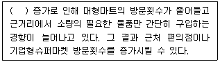
- 웰빙(well-being) 추구
- 1인 가구
- 소비 양극화
- 소비자 파워(consumer power)
- 소비 트레이딩 업(trading up)
(정답률: 73%)
57. 소매점의 판매촉진의 긍정적 효과로 옳지 않은 것은?
- 즉시적인 구매를 촉진한다.
- 흥미와 구경거리를 제공한다.
- 준거가격을 변화시킬 수 있다.
- 소비자의 상표전환 또는 이용점포전환이 가능하다.
- 고객의 데이터베이스를 구축할 수 있다.
(정답률: 46%)
58. 유통마케팅 조사방법 중 대규모 집단을 대상으로 체계화된 설문을 통해 자료를 수집하는 대표적인 서베이 기법으로 옳은 것은?
- HUT(home usage test)
- CLT(central location test)
- A&U조사(attitude and usage research)
- 패널조사(panel survey)
- 참여관찰조사(participant observation)
(정답률: 34%)
59. 광고의 효과를 측정하는 중요한 기준의 하나가 도달(reach)이다. 인터넷 광고의 도달을 측정하는 기준으로 가장 옳은 것은?
- 해당광고를 통해 이루어진 주문의 숫자
- 사람들이 해당 웹사이트에 접속한 총 횟수
- 해당 웹사이트에 접속한 서로 다른 사람들의 숫자
- 해당 웹사이트에 접속할 가능성이 있는 사람들의 숫자
- 해당 웹사이트에 접속한 사람들이 해당 광고를 본 평균 횟수
(정답률: 37%)
60. 유통경로 상에서 판촉(sales promotion)활동이 가지는 특성에 대한 설명으로 가장 옳지 않은 것은?
- 판촉활동은 경쟁기업에 의해 쉽게 모방되기에 지속적 경쟁우위를 가져오기는 어렵다.
- 판촉활동은 단기적으로 소비자에게는 편익을 가져다 주지만, 기업에게는 시장유지비용을 증가시켜 이익을 감소시키기도 한다.
- 판촉활동은 장기적으로 기업의 이미지를 개선하는데 큰 도움이 된다.
- 경쟁기업의 촉진활동을 유발하여 시장에서 소모적 가격경쟁이 발생할 수 있다.
- 단기적으로는 매출액 증대가 가능하나 장기적으로는 매출에 부정적인 영향을 미칠 수 있다.
(정답률: 52%)
61. 아래 글상자에서 설명하는 머천다이징(merchandising)유형으로 옳은 것은?
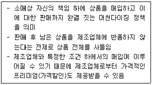
- 크로스 머천다이징(cross merchandising)
- 코디네이트 머천다이징(coordinate merchandising)
- 날씨 머천다이징(weather merchandising)
- 리스크 머천다이징(risk merchandising)
- 스크램블드 머천다이징(scrambled merchandising)
(정답률: 60%)
62. 고객관계관리(CRM) 프로그램에서 사용하는 고객유지방법에 대한 설명으로 가장 옳지 않은 것은?
- 다빈도 구매자 프로그램: 마일리지 카드 등을 활용하여 반복구매행위를 자극하고 소매업체에 대한 충성도를 제고할 목적으로 사용하는 방법
- 특별 고객서비스: 수익성과 충성도가 높은 고객을 개발하고 유지하기 위해서 높은 품질의 고객 서비스를 제공하는 방법
- 개인화: 개별 고객 수준의 정보 확보와 분석을 통해 맞춤형 편익을 제공하는 방법
- 커뮤니티: 인터넷 상에서 고객들이 게시판을 통해 의사소통하고 소매업체와 깊은 관계를 형성하는 커뮤니티를 운영하는 방법
- 쿠폰제공 이벤트: 신제품을 소개하거나 기존제품에 대한 새로운 자극을 만들기 위해 시험적으로 사용할 수 있는 양만큼의 제품을 제공하는 방법
(정답률: 62%)
63. 소비자가 점포 내에서 걸어다니는 길 또는 궤적을 동선(動線)이라고 한다. 이러한 동선은 점포의 판매전략수립에 매우 중요한 고려요소이다. 동선에 대한 일반적 설명으로 옳지 않은 것은?
- 소매점포는 고객동선을 가능한 한 길게 유지하여 상품의 노출기회를 확보하고자 한다.
- 고객의 동선은 점포의 레이아웃에 크게 영향받는다.
- 동선은 직선적 동선과 곡선적 동선으로 구분되는데, 백화점은 주로 직선적 동선을 추구하는 레이아웃을 하고 있다.
- 동선은 상품탐색에 용이해야 하고 각 통로에 단절이 없어야 한다.
- 동선은 상품을 보기 쉽고 사기 쉽게 해야하고 시선과 행동에 막힘이 없게 해야 한다.
(정답률: 58%)
64. 소매점에서 사용하는 일반적인 상품분류기준으로 옳지 않은 것은?
- 소비패턴을 중심으로 한 분류
- TPO(time, place, occasion)를 중심으로 한 분류
- 한국표준상품분류표를 중심으로 한 분류
- 대상고객을 중심으로 한 분류
- 상품의 용도를 중심으로 한 분류
(정답률: 54%)
65. 상품들을 상품계열에 따라 분류하여 진열하는 방식으로 특히 슈퍼마켓이나 대형 할인점에서 주로 채택하는 진열방식은?
- 분류 진열(classification display)
- 라이프스타일별 진열(lifestyle display)
- 조정형 진열(coordinated display)
- 주제별 진열(theme display)
- 개방형 진열(open display)
(정답률: 50%)
66. 제조업체의 촉진 전략 중 푸시(push)전략에 대한 설명으로 옳지 않은 것은?
- 최종소비자 대신 중간상들을 대상으로 하여 판매촉진활동을 하는 것이다.
- 소비자를 대상으로 촉진할 만큼 충분한 자원이 없는 소규모 제조업체들이 활용할 수 있는 촉진 전략이다.
- 제조업체가 중간상들의 자발적인 주문을 받기 위해 수행하는 촉진 전략을 말한다.
- 가격할인, 수량할인, 협동광고, 점포판매원 훈련프로그램 등을 활용한다.
- 판매원의 영향이 큰 전문품의 경우에 효과적이다.
(정답률: 39%)
67. 소매점이 사용하는 원가지향 가격설정정책(cost-oriented pricing)의 장점으로 가장 옳은 것은?
- 마케팅콘셉트에 가장 잘 부합한다.
- 이익을 극대화하는 가격을 설정한다.
- 가격책정이 단순하고 소요시간이 짧다.
- 시장 상황을 확인할 수 있는 근거자료를 활용한다.
- 재고유지단위(SKU)마다 별도의 가격설정정책을 마련한다.
(정답률: 55%)
68. 공급업체와 소매업체 간에 나타날 수 있는 비윤리적인 상업거래와 관련된 설명으로 옳지 않은 것은?
- 회색시장: 외국에서 생산된 자국 브랜드 제품을 브랜드 소유자 허가 없이 자국으로 수입하여 판매하는 것
- 역청구: 판매가 부진한 상품에 대해 소매업체가 공급업체에게 반대로 매입을 요구하는 것
- 독점거래 협정: 소매업체로 하여금 다른 공급업체의 상품을 취급하지 못하도록 제한하는 것
- 구속적 계약: 소매업체에게 구매를 원하는 상품을 구입하려면 사고 싶지 않은 상품을 구입하도록 협정을 맺는 것
- 거래거절: 거래하고 싶은 상대방과 거래하고 싶지 않은 상대방을 구분하는 경우에 발생
(정답률: 34%)
69. 아래 글상자에서 설명하는 촉진수단에 해당하는 것으로 옳은 것은?
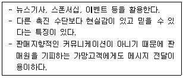
- 광고
- 판매촉진
- 인적판매
- PR(public relations)
- SNS 마케팅
(정답률: 47%)
70. 유통경로의 성과평가 방법 중 재무성과를 평가하기 위해 사용되는 지표로 가장 옳지 않은 것은?
- 순자본수익률
- 자기자본이익률
- 매출액증가율
- 부가가치자본생산성
- 재고회전율
(정답률: 44%)
4과목: 유통정보
71. 물류활동의 기본 기능 중에서 유통효용의 하나인 형태 효용을 창출해 내는 것으로 가장 옳은 것은?
- 보관기능
- 운송기능
- 정보기능
- 수배송기능
- 유통가공기능
(정답률: 48%)
72. 아래 글상자의 내용을 근거로 암묵지에 대한 설명만을 모두 고른 것으로 가장 옳은 것은?
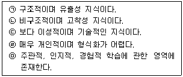
- ㉠, ㉢, ㉣
- ㉠, ㉢, ㉤
- ㉡, ㉣, ㉤
- ㉠, ㉢, ㉣, ㉤
- ㉡, ㉢, ㉣, ㉤
(정답률: 61%)
73. 디지털 데이터들 중 비정형 데이터의 예로 옳지 않은 것은?
- 동영상 데이터
- 이미지 데이터
- 사운드 데이터
- 집계 데이터
- 문서 데이터
(정답률: 50%)
74. 아래 글상자는 고객가치에 대한 개념과 구성하는 요소들을 보여주는 공식이다. 각 요소들에 대한 설명으로 옳지 않은 것은?
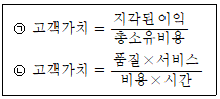
- 고객가치의 총소유비용은 구매의사결정에 중요한 영향을 미친다.
- 고객가치의 구성요소로서 품질은 제안된 기능, 성능, 기술명세 등이다.
- 고객가치의 구성요소로서 서비스는 고객에게 제공되는 유용성, 지원, 몰입 등이다.
- 고객가치의 구성요소로서 비용은 가격 및 수명주기 비용을 포함한 고객의 거래비용이다.
- 고객가치의 구성요소로서 시간은 고객이 제품을 지각하고 구매를 결정하는데 까지 걸리는 시간이다.
(정답률: 35%)
75. 정보통신 기술의 발전과 이에 따른 의식의 변화로 나타난 유통산업의 변화 현상과 가장 거리가 먼 것은?
- 브랜드 가치 증대
- 퓨전(fusion) 유통
- 소비자의 주권 강화
- 채널간의 갈등 감소
- 디지털 유통의 가속화
(정답률: 64%)
76. 아래 글상자 괄호에 들어갈 용어로 가장 옳은 것은?
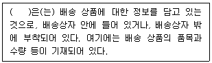
- 패킹 슬립(packing slip)
- 인보이스(invoice)
- 송금통지서(remittance advice)
- 선하증권(bill of lading)
- ATP(available to promise)
(정답률: 48%)
77. 아래 글상자의 내용은 인먼(W. H. Inmon)이 정의한 데이터웨어하우징에 대한 개념이다. 괄호에 들어갈 수 있는 단어로 옳지 않은 것은?
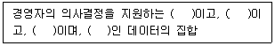
- 통합적(integrated)
- 비휘발성(nonvolatile)
- 주제 중심적(subject-oriented)
- 일괄 분석처리(batch-analytical processing)
- 시간에 따라 변화적(time-variant)
(정답률: 36%)
78. 상품 판매를 위한 애널리틱스에 대한 설명으로 옳지 않은 것은?
- 프로파일링(profiling)은 고객들의 나이, 지역, 소득, 라이프스타일(lifestyle)에 대한 분석을 통해 고객군을 선정하고, 차별화하는 기능이다.
- 세분화(segmentation)란 유사한 제품과 서비스 또는 유사한 고객군으로 분류하는 기능이다.
- 개별화(personalization)란 인구통계학적 특성, 구매기록 등과 같은 데이터에 기반해 상품 판매를 위한 개인화된 시장을 만들어 판매를 지원하는 기능이다.
- 가격결정(pricing)은 고객들의 구매 수준, 생산 비용 등을 고려해 상품 판매를 위한 적절한 가격을 결정하는 기능이다.
- 연관성(association)은 현재 상품 판매 데이터를 이용해 미래에 판매될 상품에 대하여 모델링하는 기능을 의미한다.
(정답률: 52%)
79. B2B의 대표적인 수행수단으로 활용되는 정보기술인 EDI에 대한 설명으로 가장 옳지 않은 것은?
- EDI 사용은 문서거래시간의 단축, 자료의 재입력 방지, 업무처리의 오류감소 등의 직접적 효과가 있다.
- EDI 표준전자문서를 컴퓨터와 컴퓨터간에 교환하는 전자적 정보전달 방식이다.
- 웹 EDI는 사용자가 특정문서의 구조를 만들어 사용할 수 있기 때문에 타 업무 프로그램과의 연계가 용이하다.
- 웹 EDI는 복잡한 EDI 인프라 구축 없이도 활용 가능하다.
- 기존 EDI에 비해 웹 EDI의 단점은 전용선 서비스 기반이라 구축 비용이 높다는 것이다.
(정답률: 53%)
80. 아래 글상자의 괄호에 들어갈 용어로 옳은 것은?
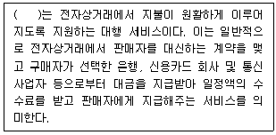
- 전자지불게이트웨이
- Ecash
- 가상화폐대행서비스
- EBPP(Electronic Bill Presentment and Payment)
- 전자화폐발행서비스
(정답률: 40%)
81. 공급사슬관리 성과측정을 위한 SCOR(supply chain operation reference) 모델은 아래 글상자의 내용과 같이 5가지의 기본관리 프로세스로 구성되어 지는데 이 중 ㉠에 해당되는 내용으로 가장 옳은 것은?
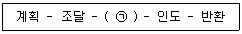
- 제품 반송과 관련된 프로세스
- 재화 및 용역을 조달하는 프로세스
- 완성된 재화나 용역을 제공하는 프로세스
- 조달된 재화 및 용역을 완성 단계로 변환하는 프로세스
- 비즈니스 목표 달성을 위한 수요와 공급의 균형을 맞추는 프로세스
(정답률: 53%)
82. 지식관리시스템은 지식이 시간의 흐름에 따라 역동적으로 개선되기 때문에 6단계의 사이클을 따르는데 이에 맞는 주기 단계가 가장 옳은 것은?
- 지식 생성-정제-포착-관리-저장-유포
- 지식 생성-정제-포착-저장-관리-유포
- 지식 생성-정제-저장-관리-포착-유포
- 지식 생성-포착-정제-저장-관리-유포
- 지식 생성-포착-정제-관리-저장-유포
(정답률: 45%)
83. 다음은 데이터웨어하우스를 구축하고, 사용자에게 필요에 맞는 정보를 제공해 주는 데이터 마트를 구축한 개념도이다. 그림의 (가)에 해당하는 기술 용어로 가장 옳은 것은?
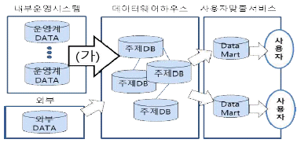
- Classify
- Multi-D(demension)
- IC(integration cycle)
- STAR(simple target apply regular)
- ETL(extraction transformation loading)
(정답률: 43%)
84. 아래 글상자의 내용에 부합되는 용어로 가장 옳은 것은?
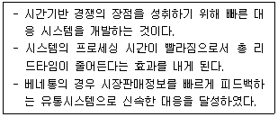
- RFID
- ECR
- VMI
- JIT
- QR
(정답률: 62%)
85. 노나카(Nonaka)의 지식변환 유형에 대한 설명으로 옳지 않은 것은?
- 사회화 - 최초의 유형으로 개인 혹은 집단이 주로 경험을 공유함으로써 지식을 전수하고 창조한다.
- 사회화 - 암묵지에서 암묵지를 얻는 과정이다.
- 외부화 - 개인이나 집단의 암묵지가 공유되거나 통합되어 그 위에 새로운 지가 만들어지는 프로세스이다.
- 종합화 - 개인이나 집단이 각각의 형식지를 조합시켜 새로운 지를 창조하는 프로세스이다.
- 내면화 - 형식지에서 형식지를 얻는 과정이다.
(정답률: 54%)
86. 정보기술의 발전으로 인한 기업들의 경쟁 원천 환경변화로 가장 옳지 않은 것은?
- 제품수명주기가 단축되고 있다.
- 고객의 요구가 다양해지고 있다.
- 독특한 질적 차이를 중시하는 추세로 변화하고 있다.
- 국가 간의 시장 장벽이 높아지고 있으며, 이로 인해 시장확대의 기회가 어려워지고 있다.
- 소비자의 요구에 맞는 제품을 신속하게 생산할 수 있는 시간경쟁이 가속화되고 있다.
(정답률: 68%)
87. 가트너(Gartner)에서 제시한 빅데이터의 3대 특성으로 가장 옳은 것은?
- 데이터 규모, 데이터 생성속도, 데이터 다양성
- 데이터 규모, 데이터 가변성, 데이터 복잡성
- 데이터 규모, 데이터 다양성, 데이터 가변성
- 데이터 생성속도, 데이터 가변성, 데이터 복잡성
- 데이터 생성속도, 데이터 다양성, 데이터 복잡성
(정답률: 47%)
88. 아래 글상자 괄호에 들어갈 용어로 가장 옳은 것은?
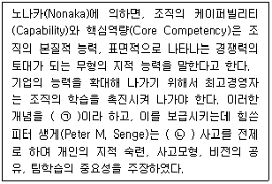
- ㉠ 학습조직, ㉡ 자율적
- ㉠ 시스템학습, ㉡ 자율적
- ㉠ 학습조직, ㉡ 인과적
- ㉠ 학습조직, ㉡ 시스템적
- ㉠ 시스템학습, ㉡ 인과적
(정답률: 40%)
89. 아래 글상자는 공급사슬관리를 위한 제조업체의 구매-지불 프로세스의 핵심 기능이다. 프로세스 흐름에 따라 순서대로 나열한 것으로 옳은 것은?
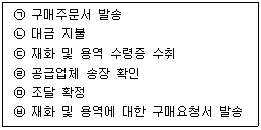
- ㉥→㉤→㉣→㉢→㉡→㉠
- ㉠→㉤→㉣→㉢→㉥→㉡
- ㉠→㉡→㉢→㉣→㉤→㉥
- ㉠→㉤→㉣→㉢→㉡→㉥
- ㉥→㉤→㉠→㉢→㉣→㉡
(정답률: 39%)
90. 소비자가 개인 또는 단체를 구성하여 상품의 공급자나 생산자에게 가격, 수량, 부대 서비스 조건을 제시하고 구매하는 역경매의 형태가 일어나는 전자상거래 형태로 가장 옳은 것은?
- B2B
- P2P
- B2C
- C2C
- C2B
(정답률: 57%)